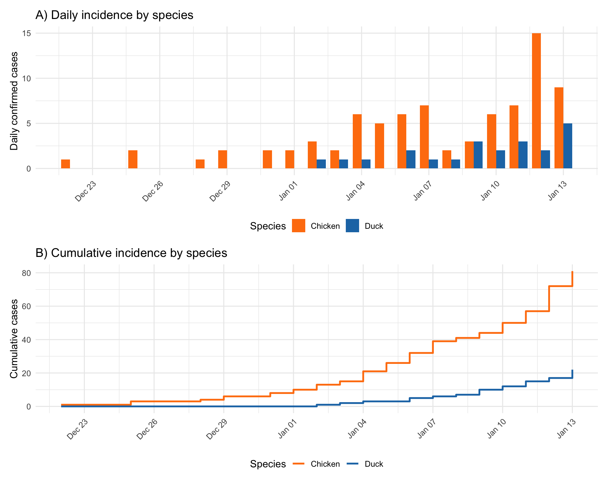
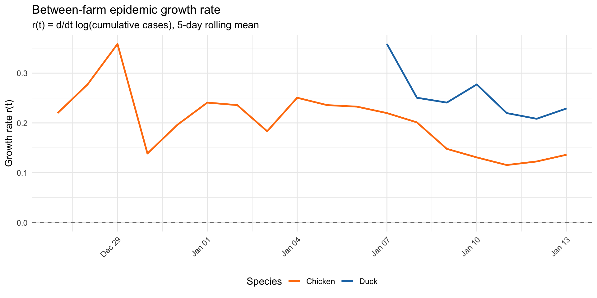
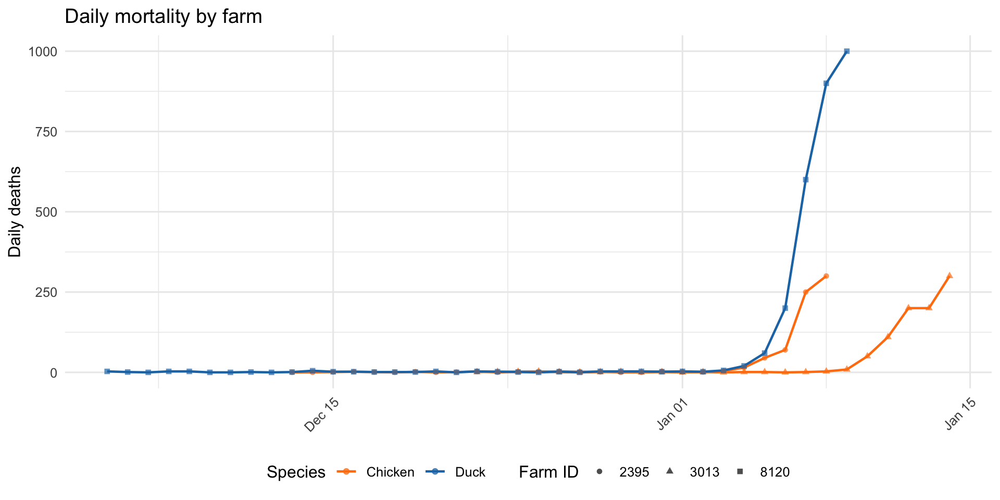
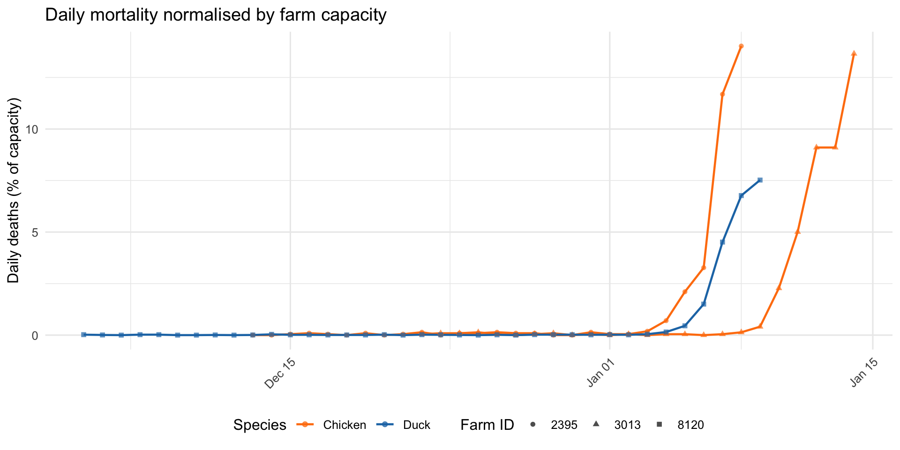
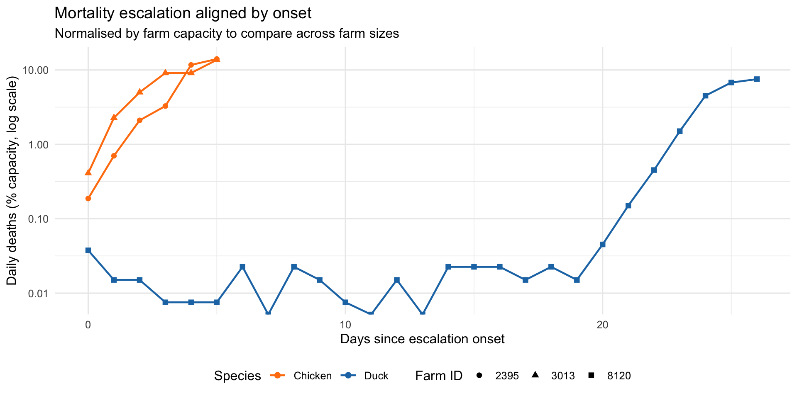
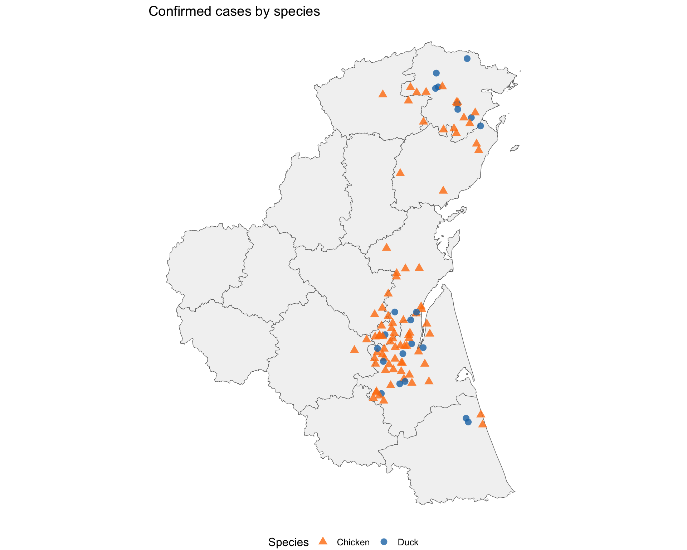
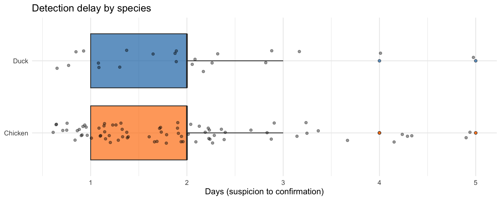

| Species | Cases | Farms at risk | Attack rate (%) | First confirmed | Last confirmed | Detection methods |
|---|---|---|---|---|---|---|
| Chicken | 81 | 4435 | 1.83 | Dec 22 | Jan 13 | contact_tracing, passive, preshipment |
| Duck | 22 | 4725 | 0.47 | Jan 02 | Jan 13 | passive |
HPAI Outbreak: Species Comparison
Phase 1: Do transmission patterns differ between chicken and duck?
Overview
The Phase 1 outbreak involves 103 confirmed cases across two species. This analysis examines whether transmission patterns differ between chicken and duck farms.
Chicken cases (81) outnumber duck cases (22) nearly 4:1. The chicken epidemic began 11 days before the first duck case was confirmed. Duck cases are detected exclusively through passive surveillance, while chicken cases also benefit from preshipment testing and contact tracing.
Epidemic curves by species

The chicken epidemic shows sustained growth from late December, while duck cases emerge from early January with a slower accumulation rate. Both species show accelerating case counts in the final days of Phase 1.
Between-farm growth rate by species

| Species | Mean r(t) | Median r(t) | Doubling time (days) | Period |
|---|---|---|---|---|
| Chicken | 0.22 | 0.203 | 3.2 | Dec 25 – Jan 13 |
| Duck | 0.24 | 0.203 | 2.9 | Jan 04 – Jan 13 |
Within-farm mortality growth
The mortality ledger data provides daily death counts for three farms: two chicken broiler farms (2395, 3013) and one duck conventional farm (8120). This allows comparison of within-farm disease progression by species.


| Farm ID | Species | Capacity | Escalation start | Peak date | Peak deaths/day | Peak (% capacity) | Growth rate (r) | Doubling time (days) |
|---|---|---|---|---|---|---|---|---|
| 2395 | Chicken | 2139 | Jan 03 | Jan 08 | 300 | 14.0 | 0.87 | 0.8 |
| 3013 | Chicken | 2197 | Jan 09 | Jan 14 | 300 | 13.7 | 0.64 | 1.1 |
| 8120 | Duck | 13291 | Dec 14 | Jan 09 | 1000 | 7.5 | 0.20 | 3.5 |

Spatial distribution by species

| Species | Same-species NN (km) | Cross-species NN (km) | Cases |
|---|---|---|---|
| Chicken | 4.2 | 5.6 | 81 |
| Duck | 7.5 | 3.7 | 22 |
Detection and response by species
| Detection Method | Chicken | Duck |
|---|---|---|
| Contact Tracing | 1 | 0 |
| Passive | 74 | 22 |
| Preshipment | 6 | 0 |

| Species | Production | Preventive culls |
|---|---|---|
| Chicken | Broiler 1 | 8 |
| Chicken | Broiler 2 | 10 |
| Chicken | Layer | 1 |
| Duck | Conventional | 25 |
| Duck | Organic | 8 |
Duck farms account for 33 of 52 preventive culls (63%), despite contributing only 22 of 103 confirmed cases (21%). This suggests a more precautionary approach to duck farm culling.
Movement network
Animal movement records are available exclusively for the chicken supply chain: all 7,187 recorded movements are from broiler_1 (grower) to broiler_2 (finisher) farms. No duck movements are recorded.
| Metric | Value |
|---|---|
| Total movements | 7,187 |
| Unique source farms (broiler_1) | 1,248 |
| Unique destination farms (broiler_2) | 2,746 |
| Movements from case farms | 88 |
| Movements to case farms | 165 |
| Direct case-to-case movements | 3 |
The chicken movement network connects broiler_1 farms (source) to broiler_2 farms (destination). This supply chain may explain the disproportionately high attack rate in broiler_2 farms (1.8% overall for chicken vs 0.5% for duck) and the earlier onset of the chicken epidemic.
The absence of recorded duck movements suggests duck-to-duck transmission occurs through different pathways — potentially environmental contamination, shared water sources, or wild bird contact rather than commercial animal movements.
Summary
Key differences between species:
Timing: The chicken epidemic began
11days before duck cases appeared, suggesting either earlier introduction or faster initial spread in the chicken population.Scale: Chicken farms have higher attack rates (
1.8% vs0.5%) despite a larger population at risk (4,435vs4,725farms).Transmission pathway: Chicken cases are linked by a commercial movement network (broiler_1→broiler_2), providing a clear mechanistic pathway for between-farm spread. Duck cases lack recorded movements, pointing to alternative transmission routes.
Detection: Chicken cases benefit from multiple detection methods (passive, preshipment, contact tracing), while all duck cases are detected passively. This may affect the apparent timing and completeness of case ascertainment in each species.
Response: Preventive culling is applied disproportionately to duck farms, possibly reflecting geographic proximity to outbreaks or different risk assessments for duck production systems.
Limitations
- The mortality ledger data covers only 3 farms (2 chicken, 1 duck), limiting within-farm growth comparisons.
- The absence of duck movement data does not necessarily mean ducks are not moved — movements may occur through unrecorded channels.
- Different detection methods between species may create ascertainment bias: earlier/more complete detection in chickens could inflate apparent attack rates relative to ducks.
- Growth rate estimates are sensitive to the small number of duck cases, particularly in the early epidemic period.